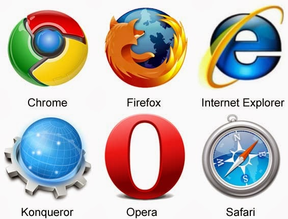
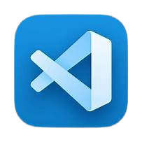
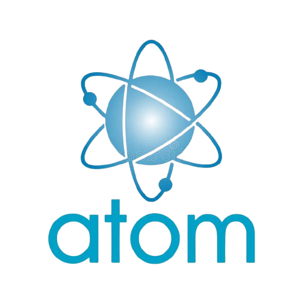
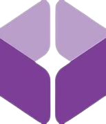

NAVEGADORES
Os navegadores web são fundamentais para acessar e visualizar projetos web, permitindo que desenvolvedores e usuários compreendam o estado atual do projeto. Cada navegador oferece um conjunto próprio de funcionalidades, como suporte a plugins específicos e ferramentas de desenvolvimento. Como a compatibilidade varia entre navegadores, é mais eficiente usar códigos versáteis que funcionem bem nos navegadores mais populares, em vez de tentar adaptar um site para cada navegador específico.

Editores de código
Os editores de código são usados para criar e modificar códigos em diversas linguagens, neles os desenvolvedores irão usar as linguagens para desenvolver algoritmos e fazer com a máquina faça o que se deseja.
Alguns deles são:
VS CODE
O Visual Studio Code (VS Code) é um editor de código-fonte gratuito, desenvolvido pela Microsoft, que suporta várias linguagens de programação. Ele oferece recursos poderosos como depuração, controle de versão integrado, e uma ampla gama de extensões. Além disso, é altamente personalizável, permitindo aos desenvolvedores adaptar o ambiente de trabalho às suas necessidades.

ATOM
Atom é um editor de texto e código-fonte gratuito, desenvolvido pelo GitHub, que é altamente personalizável através de pacotes e temas. Ele oferece recursos como auto-completar inteligente, controle de versão integrado e um sistema de colaboração chamado Teletype. No entanto, o suporte oficial foi descontinuado, e recomenda-se a transição para alternativas como o VS Code.

VIM
Vim é um editor de texto altamente configurável e eficiente, amado por desenvolvedores por sua versatilidade e atalho de teclas. Lançado inicialmente em 1991, é baseado no editor vi e é famoso por ser poderoso e leve. Ideal para quem deseja produtividade e personalização no ambiente de desenvolvimento.

CODEANYWHERE
Codeanywhere é um ambiente de desenvolvimento baseado em nuvem que permite codificação, depuração e colaboração em projetos usando qualquer dispositivo e navegador. Ele suporta uma ampla gama de linguagens de programação e oferece ambientes de desenvolvimento pré-configurados, terminais web e compartilhamento de tela em tempo real. Ideal para desenvolvedores que desejam trabalhar de forma rápida e eficiente, sem a necessidade de instalações locais.

BRACKETS
Brackets é um editor de código open-source focado em web design e desenvolvimento, mantido pelo Adobe. Oferece recursos únicos como a edição em linha e a visualização ao vivo, que permite ver alterações em tempo real no navegador. É altamente extensível, permitindo que os desenvolvedores personalizem sua funcionalidade através de uma ampla gama de extensões.
SUNBLIME TEXT
Sublime Text é um editor de texto sofisticado, conhecido por sua velocidade, interface de usuário minimalista e suporte a várias linguagens de programação. Ele possui recursos avançados como múltiplas seleções, paleta de comandos e API de plugins, permitindo personalização extensa. É altamente valorizado por desenvolvedores que buscam um ambiente de desenvolvimento leve e eficiente.
GIT POD
Gitpod é um ambiente de desenvolvimento integrado (IDE) baseado na nuvem que permite desenvolvimento contínuo e colaboração em tempo real. Ele oferece espaços de trabalho pré-configurados que podem ser iniciados diretamente do seu repositório Git, eliminando a necessidade de configurações locais. Além disso, suporta várias linguagens de programação e integrações com ferramentas de desenvolvimento populares.
NOTEPAD++
Notepad++ é um editor de texto e código-fonte gratuito para Windows, conhecido por sua leveza e eficiência. Ele suporta várias linguagens de programação e oferece recursos avançados como destaque de sintaxe, autocompletar e gravação de macros. É altamente popular entre desenvolvedores devido à sua simplicidade e extensibilidade através de plugins.